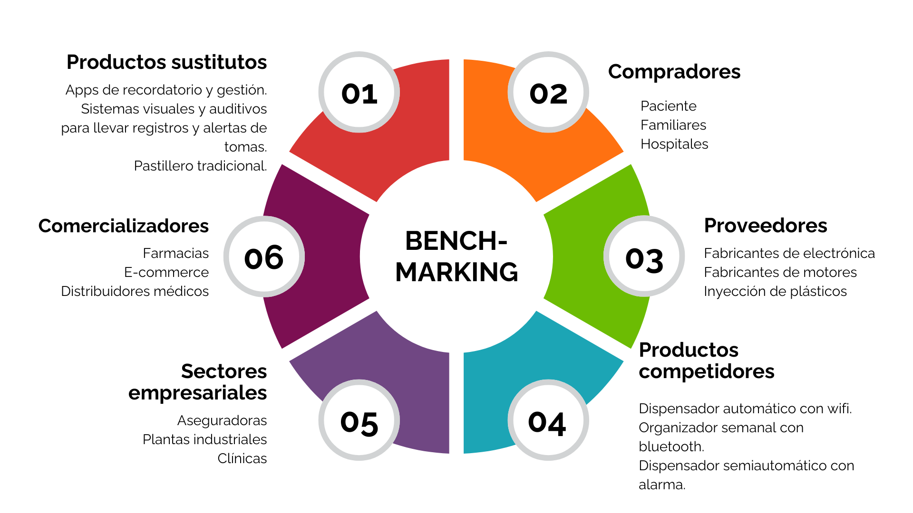
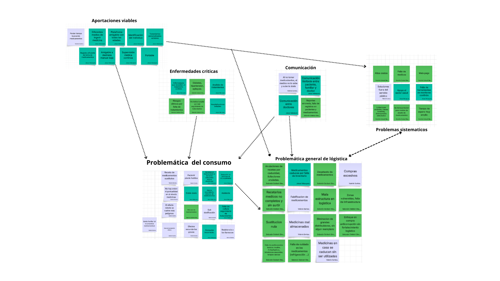
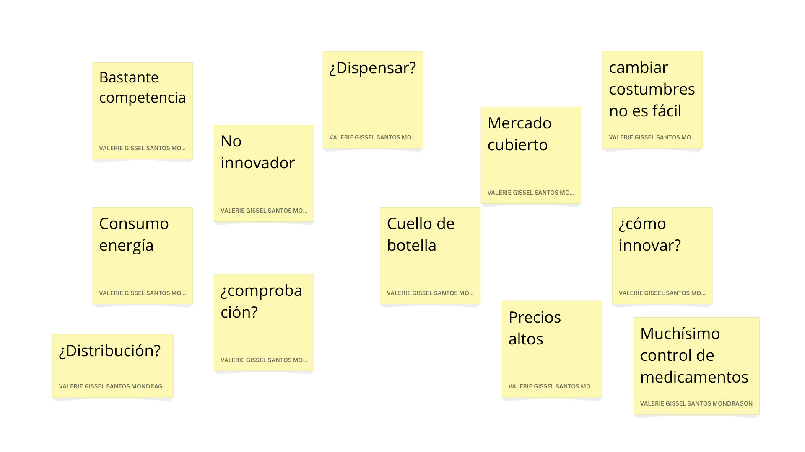
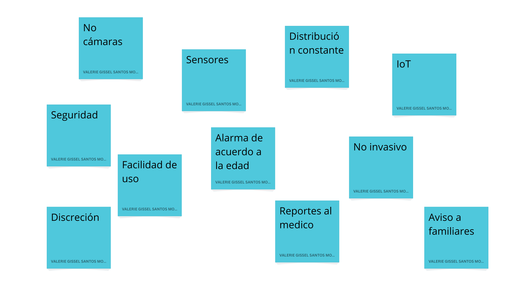
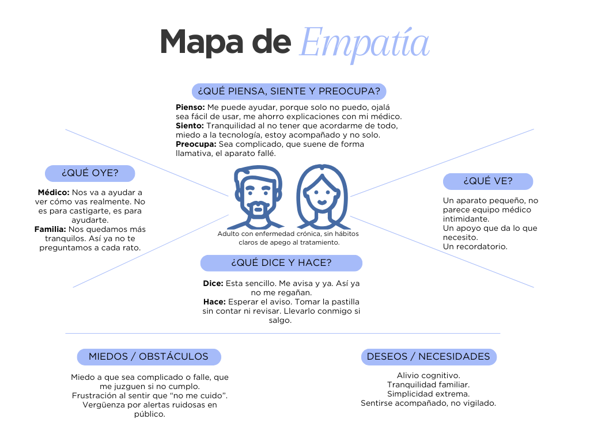
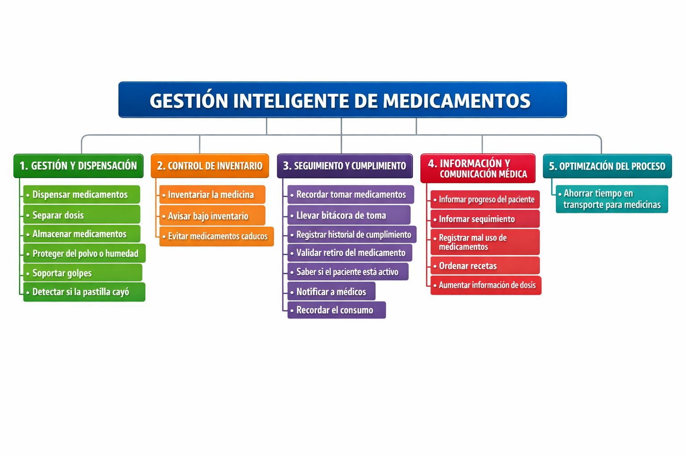

Diseño Preliminar
1. Crisis de Desabasto y Carencias
Causas: Fallas en la cadena de suministro, cambios en políticas de compra consolidada, investigaciones por prácticas desleales y deficiencias logísticas.
Impacto Social: Organizaciones como Cáritas y Coparmex reportan afectaciones a sectores vulnerables. En hospitales de la SSA se han registrado protestas por falta de insumos básicos y medicamentos oncológicos.
Pérdidas Económicas: Reportes de medicamentos caducados en almacenes (ej. Sinaloa) reflejan ineficiencia administrativa.
2. Gestión y Logística Gubernamental
Estrategias: Adelanto de compras e investigaciones por monopolios y prácticas desleales.
Transparencia: Implementación de portales de seguimiento por parte de la Secretaría de Salud, aunque persiste percepción pública de carencia.
3. Innovación y Soluciones Tecnológicas
Dispensación Automatizada: Reduce errores humanos, optimiza inventarios y mejora la seguridad del paciente.
Trazabilidad: Permite seguimiento del medicamento desde almacén hasta el paciente.
4. Adherencia Terapéutica y Cronoterapia
Adherencia: El incumplimiento terapéutico incrementa costos hospitalarios y riesgos de salud.
Cronoterapia: La UNAM destaca la importancia de la hora de administración para maximizar la efectividad del tratamiento.
5. Medicamentos Caducos
Riesgos: Contaminación ambiental y mercado negro si no se desechan adecuadamente.
Recolección: En CDMX existen contenedores especiales gestionados por instituciones como el IPN y la Secretaría de Salud.
Sistema basado en IoT y Servomotores
Enfoque: Conectividad IoT de bajo costo
Este artículo describe un dispensador moderno enfocado en la conectividad a internet de bajo costo.
El cerebro: NodeMCU (ESP8266) con conexión WiFi integrada.
Mecanismo: Servomotores SG90 controlados mediante PWM.
Interfaz: LCD 16x2 + buzzer para alarma sonora.
Sistema de Asistencia Visual/Auditiva
Enfoque: Asistencia sensorial
Diseñado para personas ciegas o adultos mayores que requieren guías sensoriales.
El cerebro: Arduino Nano + HC-05 + RTC DS3231.
Mecanismo: LEDs y alarmas piezoeléctricas.
Interfaz: App Android vía Bluetooth.
Sistema basado en Raspberry Pi y Motor a Pasos
Enfoque: Procesamiento avanzado
Diseño robusto ideal para lógica compleja o bases de datos locales.
El cerebro: Raspberry Pi 3 programada en Python.
Mecanismo: Motor 28BYJ-48 + driver ULN2003.
Innovación: Sensor IR que valida la entrega y envía alerta por correo.
US 2024/0082108 A1: Smart Pill Dispenser
Enfoque: Seguridad y Prevención de Abuso (Opioides)
Diseñado para evitar sobredosificación o robo del medicamento.
Mecanismo: Cartucho bloqueado con autenticación y detección de manipulación física.
Diferenciador: Validación de identidad (biometría o códigos) y seguridad física avanzada.
Estatus: Solicitud de Patente (A1) – Publicada en 2024.
US 11,602,488 B2: Automated Pill Dispenser
Enfoque: Robustez Mecánica y Fiabilidad
Automatiza la dosificación reduciendo errores mecánicos.
Mecanismo: Sistema de carrusel giratorio con motor y canal de caída.
Electrónica clave: Sensores que validan que la pastilla cayó correctamente.
Estatus: Patente Concedida (B2) – Activa desde 2023.
CN 111658517 A: Smart Medicine Box
Enfoque: IoT e Integración con App
Sistema de monitoreo remoto para adultos mayores.
Funcionamiento: Conexión a la nube que envía alertas al cuidador.
Hardware: STM32, módulo WiFi, módulo de voz y LEDs indicadores.
Estatus: Solicitud de Patente China (A) – Publicada en 2020.
Internet of Medical Things: Remote Healthcare Systems and Applications
Editores: D. Jude Hemanth, J. Anitha, George A. Tsihrintzis
Este libro cubre las bases del Internet of Medical Things (IoMT), tecnologías, sensores y aplicaciones en sistemas de salud, incluyendo monitoreo remoto de pacientes y redes de dispositivos inteligentes conectados.
IoT in Healthcare Systems: Applications, Benefits, Challenges, and Case Studies
Editores: Piyush Kumar Shukla, Aditya Patel, Prashant Kumar Shukla y otros
Ofrece una visión general de las tecnologías IoT en el sector salud, con casos de uso prácticos, beneficios y desafíos. Incluye análisis de cómo IoT mejora el cuidado de pacientes mediante sistemas conectados.
1. Baja adherencia terapéutica (OMS)
Magnitud global: Problema mundial de gran magnitud
La OMS señala que la falta de adherencia es la principal causa de que los medicamentos no generen todos sus beneficios.
En países desarrollados, la adherencia en enfermedades crónicas es apenas superior al 50%. Entre el 50–60% de los pacientes no siguen adecuadamente su tratamiento.
2. Tasas de adherencia por enfermedad
Datos clave: Rangos amplios e inconsistentes
Diabetes: 36–87%
Hipertensión: 33–84%
Cáncer (oral): 20–100%
VIH/SIDA: 70–80%
Estos rangos demuestran la inestabilidad en el cumplimiento terapéutico.
3. Consecuencias clínicas
Impacto: Hospitalizaciones y mayor mortalidad
La no adherencia incrementa hospitalizaciones y desgaste del sistema de salud.
Un estudio clásico (Graham et al.) mostró que el éxito del tratamiento era del 96% cuando el paciente tomaba al menos el 60% de la medicación, pero bajaba al 69% cuando la adherencia era menor.
4. Consecuencias económicas
Costo estimado: 100 billones USD/año en EE.UU.
La interrupción de terapias puede aumentar al menos 20% los costos de salud pública.
Genera mayores hospitalizaciones, visitas a urgencias y uso adicional de medicamentos.
5. Evidencia tecnológica
TIC en salud: Mejora comprobada en adherencia
Programas tecnológicos y sistemas inteligentes aumentan la adherencia, reducen hospitalizaciones y disminuyen costos.
La integración de TIC en el sector sanitario está transformando las estrategias de cumplimiento terapéutico.
Medication Adherence Measurement in Chronic Diseases: A State-of-the-Art Review of the Literature
Revisión científica que indica que aproximadamente el 50% de los pacientes con enfermedades crónicas no cumple su tratamiento prescrito, generando consecuencias clínicas y de salud pública.
Ver fuenteMedication adherence influencing factors — an overview of systematic reviews
Revisión de revisiones científicas que identifica múltiples factores que influyen en la adherencia terapéutica, confirmando que el problema es multifactorial y persistente.
Ver fuenteDefinición de adherencia — Organización Mundial de la Salud (OMS)
La OMS define la adherencia como el grado en que el comportamiento del paciente corresponde con las recomendaciones acordadas con el profesional de salud. Señala que solo alrededor del 50% de los pacientes crónicos cumple adecuadamente sus tratamientos.
Ver fuenteEnhancing Medication Adherence with Chronic Diseases through IoT Technology
Propone un sistema basado en IoT que monitorea en tiempo real, genera recordatorios y mejora la educación del paciente, demostrando el potencial de la tecnología conectada.
Ver fuenteRevolucionando el Sector Salud: Aplicaciones Innovadoras de IoT
Explica aplicaciones de IoT en salud, incluyendo gestión de medicamentos y dispensadores inteligentes, mejorando eficiencia y calidad de atención.
Ver fuente1. Robots en Farmacias de México (El Universal)
Descripción: Llegada de la tecnología alemana BD Rowa a farmacias mexicanas para automatizar la dispensación de medicamentos.
Tecnología: Utiliza brazos mecánicos conectados a sistemas de inventario para organizar, surtir medicamentos en segundos y gestionar automáticamente fechas de caducidad.
Ver artículo completo2. Pastillero Inteligente con Asistente Virtual (La Crónica de Hoy)
Proyecto: GUIBSA, desarrollado por estudiantes de la Universidad Panamericana y premiado por la Fundación James Dyson México.
Tecnología: Integra diseño industrial con IoT para enviar alertas a familiares mediante app móvil si el paciente no toma su dosis. Incluye alarmas auditivas y visuales.
Ver artículo completo3. Automatización Hospitalaria y Eficiencia (El Economista)
Análisis: Digitalización y uso de dispensadores automáticos en hospitales mexicanos.
Impacto: Reducción de errores humanos, optimización de gastos y registros de consumo en tiempo real con alertas de suministro.
Ver artículo completo




1. Requerimientos básicos
El dispositivo debe entregar la pastilla correcta en el momento correcto.
El usuario debe entender claramente cuándo tomar su medicamento.
El usuario debe sentirse seguro usando el dispositivo.
El usuario debe poder confiar en que el dispositivo no fallará sin avisar.
El dispositivo debe proteger sus medicamentos y su información personal.
El mecanismo debe ser compatible con diversos tamaños de pastillas
El dispositivo tiene confirmación de retiro (o no retiro)
2. Requerimientos lineales
Mientras más fácil y rápido sea tomar el medicamento, mejor.
Mientras más claros sean los avisos (visual/sonoro), más cómodo me siento.
Mientras menos tenga que recordar horarios, más valoro el producto.
El dispositivo debe notificar al usuario el nivel bajo de inventario para anticipar la compra de medicamento.
Mientras menos intervención de terceros requiera, mejor experiencia tengo.
3. Requerimientos atractivos
El diseño exterior debe ser discreto.
El sistema avisa a mi doctor sin que yo tenga que explicar todo.
El sistema me permite ver mi progreso de forma sencilla.
El dispensador debe contar con iluminación nocturna tenue.
- Precisión temporal de dispensado (Error ± segundos/minutos)
- Precisión de selección de compartimento (% de dispensados correctos por ciclo)
- Capacidad de identificación del medicamento (Número de compartimentos independientes / medicamentos soportados)
- Tiempo de respuesta del sistema ante evento programado (ms)
- Confirmación de retiro de medicamento (Detección binaria (retirado / no retirado))
- Tiempo máximo de detección de no-retiro (segundos)
- Compatibilidad con tamaños de pastillas (mm)
- Capacidad máxima de almacenamiento (Número de pastillas por compartimento / total)
- Nivel de ruido durante operación (dB)
- Intensidad luminosa de notificaciones (Lúmenes)
- Frecuencia y volumen de alertas sonoras (dB y Hz)
- Tiempo de aprendizaje del usuario (min)
- Número de pasos para tomar el medicamento (Cantidad de acciones del usuario)
- Autonomía energética del dispositivo (horas/días)
- Tiempo de respaldo ante falla eléctrica (horas)
- Detección y reporte de fallas (segundos)
- Tasa de fallos mecánicos (Fallos por número de ciclos)
- Integridad de datos de cumplimiento (% de registros almacenados correctamente)
- Latencia de sincronización con plataforma externa (segundos/minutos)
- Nivel de seguridad de acceso al dispositivo (PIN, RFID, etc.)
- Protección de datos personales (Nivel de cifrado / protocolo de seguridad utilizado)
- Umbral de alerta por bajo inventario (% restante de medicamento que dispara alerta)
- Iluminación nocturna del dispensador (Lúmenes)
- Dimensiones físicas del dispositivo (mm)
- Peso total del dispositivo (g)
- Tiempo de configuración inicial (min)
- Consumo energético promedio (mA o Wh por día)
- Resistencia a manipulación externa (N)
En esta sección se presenta la matriz HOQ (House of Quality) que relaciona los requerimientos del usuario con las características de ingeniería.
📊 Descargar Matriz HOQ (.xlsx)